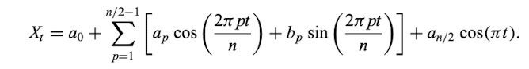
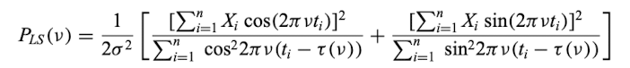

Time Series Analysis
When to Use
when wanting to find the period of data or predict future values
using trends that occur at specific time intervals
Key Points
Stationary: time series is invariant to shifts in time and oscillates around a constant mean
Autocorrelation: measure of how related a time series is to itself at different lags;
essentially measuring the memory of a time series
Lag: a fixed amount of passing time for a previous event; essentially delay
White Noise: time series that is random with a constant mean and variance but has no autocorrelation
Lag k Scatter Plot: plot the values of different lags to visually determine trends
Minimum String Length: way to find period by using the modulus of the phase fold;
the period with the minimum distance to connect the phase points is the estimated period
Time-Domain Analysis
Autocorrelation Function:
for evenly spaced data
the correlation at different lags are calculated
used to detect non-randomness in time series data
highest peak (that is not the first one) in correlogram shows significant trend in data
Partial Autocorrelation Function:
for evenly spaced data
gives autocorrelation at a value of k by removing effects shorter than k
helps analyse the relationship between lags
done by fitting regressive model that accounts for each lag
PACF(i+1) = [ACF(i+1) - ACF(i)2]/[1-ACF(i)2]
Autoregression Model:
for evenly spaced data
used to predict future values based on past values with different weights
expected mean is 0
ACF for lag k is now time-invariant
Moving Average Model:
for evenly spaced data
used to predict future values based on the errors of past values
ARMA: Autoregressive-Moving Average
for evenly spaced data
combines the AR and MA models to make future predictions
ARIMA: Autoregressive Integrated Moving Average
for evenly spaced data
data does not have to be stationary
the data is transformed to get the linear average change by taking xt+1 - xt
3 parameters: autoregressive order p, order for moving average q, difference for change in mean q
Discrete Correlation Function:
for unevenly spaced data
computes ACF without having to account for interpolating the unevenly spaced data onto a regular grid
can treat autocorrelation and cross-correlation
Ljung Box Statistic:
Ho: time series random or white noise
H1: time series has a serial correlation
Q(m) = n(n+2)∑(rj2/n-j) from 1 to m where m is the different lags
Spectral Analysis
Power Spectral Density:
for evenly spaced stationary data
the Fourier Transform of the autocorrelation function
Periodogram:
for evenly spaced data
identifies period of a cyclical time series
uses the classic finite fourier series: sum of cosines and sines
Lomg-Scargle Periodogram:
for unevenly spaced data
the different n's have different powers